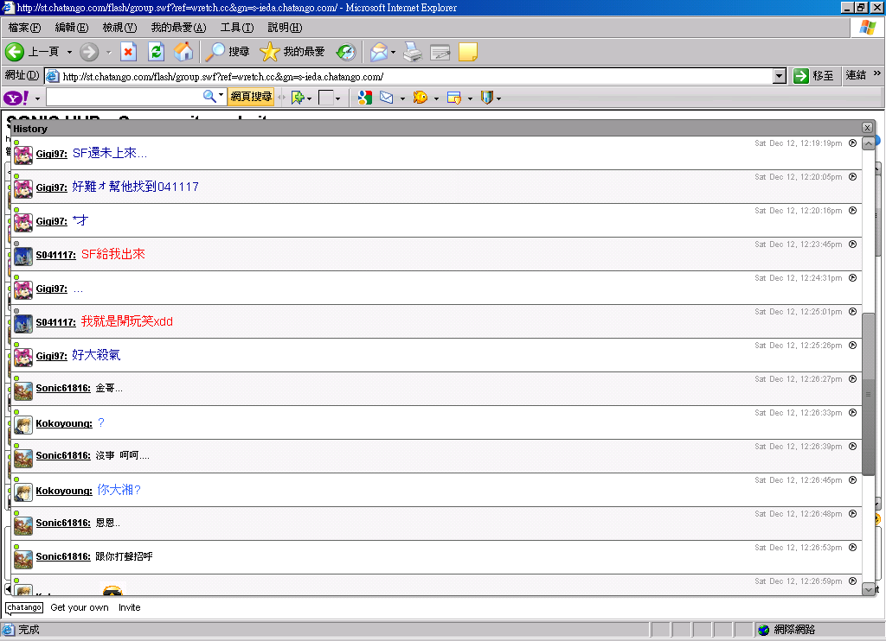
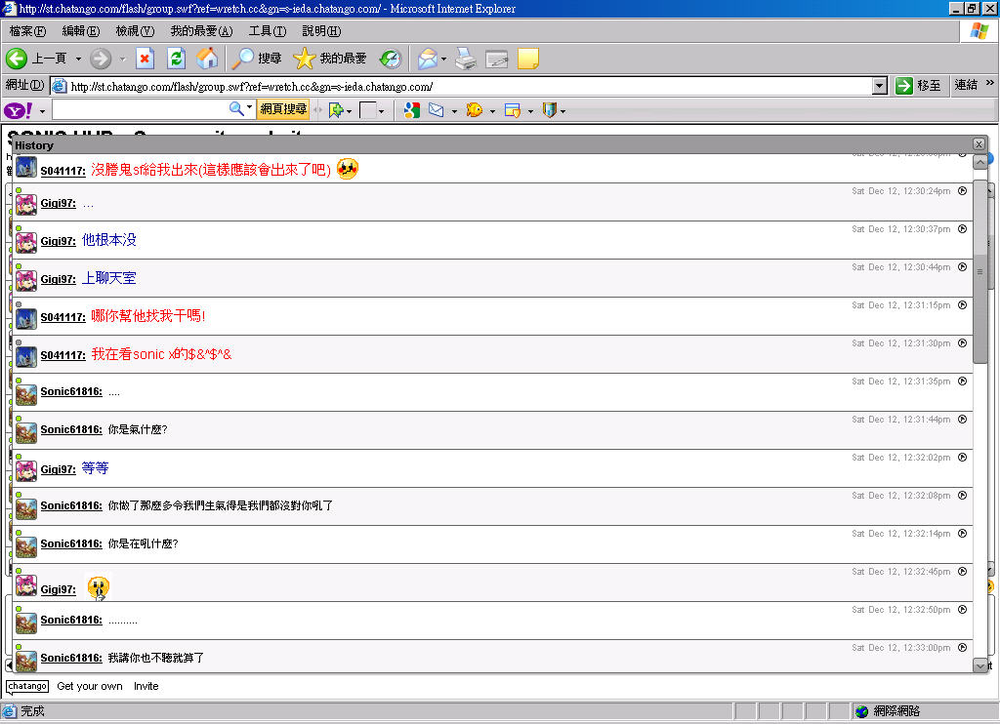
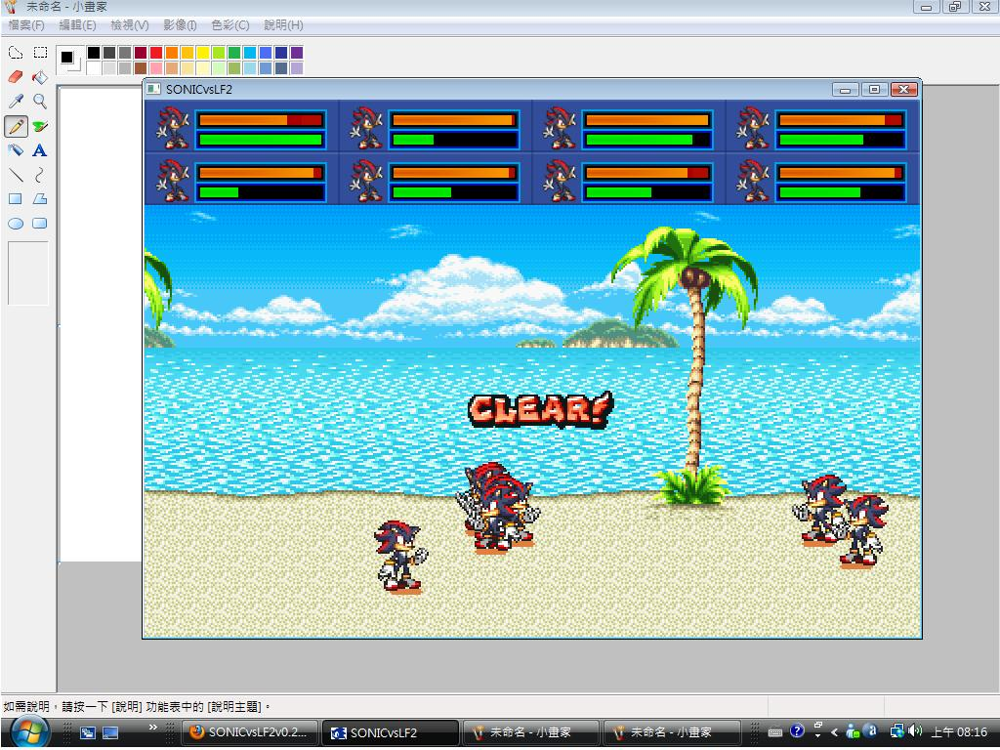
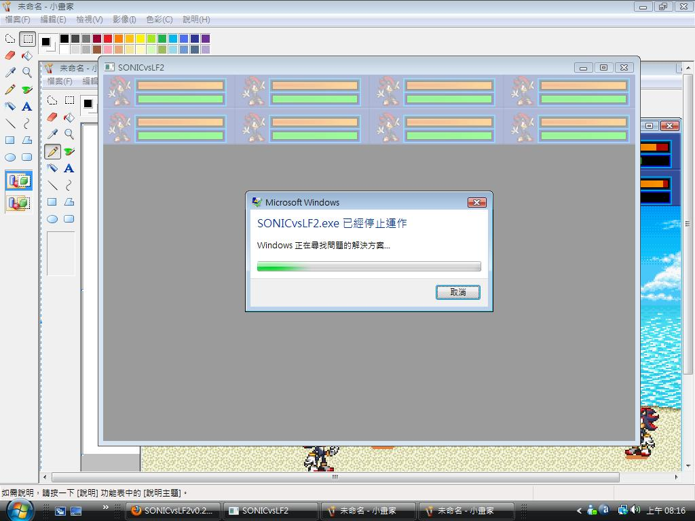
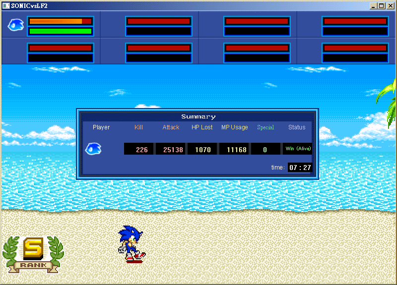
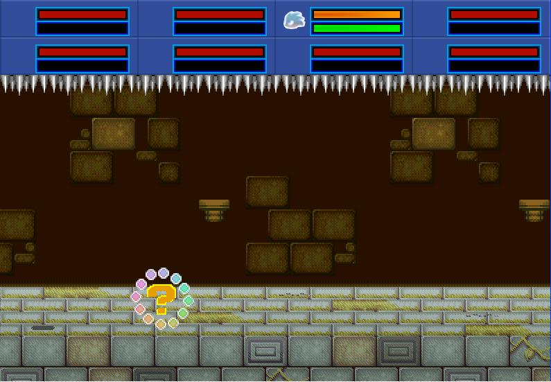

Sonic Gather Battle SAGE版
本文章最後由 shadow27080046 於 2017/3/4 06:52 PM 編輯 ソニックギャザーバトル (Sonic Gather Battle)
2009-2017
這是我的第一個Sonic Project，陪了大家許多年…現在發布的日期已經到來，它已經擁有更成熟的遊戲內容。
目前有六種模式可以選擇，能玩的有三種‥
バトル (Versus)：可以進行1對1到1對7的模式，以主要角色互相戰鬥為主，並能欣賞許多背景和音樂。
アドベンチャー (Adventure)：對Sonic來說是耳熟能詳的標準模式，以闖關躲過陷阱和擊敗敵人為主，如果覺得太難可以找親朋好友連線一起挑戰。
ワールドマップ (World Map)：可以在世界外遊蕩並選擇關卡的模式，以拯救動物為主，有點像初代一開始的遊戲目的，仔細找找…或許可以找到更多東西。
剩下的是非可玩或是未開發完的模式…
ステージ作り (Stage Builder)：顧名思義就是能創造一個屬於自己的關卡，這個模式還在開發中。
ゲームデータ (Game data)：這裡記錄了遊戲的基本訊息，像是啟動次數、VS次數等等，看看還有沒有更多資料？
オプション (Option)：提供遊戲進階的選項設置，但是這個模式還沒有完成。
------------------------------------------------------ 遊戲是用
體驗 的比較快，我的話不多但接下來很重要！
這篇文章會提供下載連結，但是各位並不能
轉載 ，也不可以私自
上傳 它。
------------------------------------------------------ https://drive.google.com/file/d/0B-KO9aljYfUkbHdqWmUybERieEE
不好意思.....
本文章最後由 s041117 於 2009/11/1 04:21 PM 編輯
我建議你關閉L2-L4,且L1沒有敵人s041117 發表於 2009/11/1 16:05 大概是我沒聽過的名詞.. 什麼意思啊XD
當我下載，安裝完成後
當我下載，安裝完成後willnazo 發表於 2009/11/1 19:16 你可以試一下安裝以下由微軟提供的更新包, 或者能解決「無法執行」的問題Microsoft VC++ 2005 SP1 redistributable package 可能是沒安裝這東西的關係吧!
謝謝大大分享john861014 發表於 2009/11/21 11:47 SonicFan !膚淺!! 建議*... 編輯一下文章吧別這樣回覆… 我會不太高興 懂嗎XD?
shadow27080046 發表於 2009/11/21 06:09 PM 不叫大大是沒錯，不過現在挺多人不懂網路禮節
就像john861014這位可能真的不了解。
所以就體諒一下，糾正他吧[:baozi4:]
10# binyi0219 我認為他根本是要檔案而來,我說私下給他他拿到應不會再來亂了[:baozi10:]
本文章最後由 jerrytown 於 2009/11/23 07:38 PM 編輯
shadow27080046 發表於 2009/11/21 06:09 PM 我想他也有可能是只有要找這遊戲而註冊的
而不是真正的同志
你真的很辛苦完成了這遊戲
我想遊戲人物製作過程一定很累人[:smile6:]
總之你的付出一定有代價 我們SHUB論壇的同志一定會支持你的[:smile42:]
(附註SonicFan可以簡稱為SF唷)
你真的很辛苦完成了這遊戲gmasomee3 發表於 2009/11/24 22:28 還沒完成呢XD.. 還在體驗 +測試版 ..我也是為了SONIC (?) 檔案小攜帶方便XD?
sonic lf2啊
sonic lf2啊jny84 發表於 2009/11/29 14:41 這樣呀.. 譬如打肥蛋的時候
本文章最後由 s041117 於 2009/12/12 11:57 AM 編輯 L2很像是STH15的,我還認為全是SU的[:smile39:]
shadow27080046 發表於 2009/12/1 14:15 我能玩
本文章最後由 s041117 於 2009/12/11 09:24 PM 編輯 我被ss囧到了!太強了
shadow27080046 發表於 2009/12/11 15:17 完全不受傷喔?打中至少-1血吧O_o
咦? 慢著.. 規則是我定的呢.. 普通物理攻擊能讓SuperSonic造成傷害? super有可能這樣強嗎?(hyper不是)
super都有輸的時候(詳看sonic x 第三季)
Hyper適用於美版SONIC 某C登場已經是第三季
19# s041117 自以為知道的很多...(?) 你知道同人的比較多XD 瘋狂人物 瘋狂 敘述 無敵 ≠瘋狂 瘋狂 我相信你可以做的比我還好 對不對?
本文章最後由 willnazo 於 2009/12/11 10:55 PM 編輯 19# s041117 阿阿?Hyper適用於美版SONIC?
我不太明白你的意思,Hyper化是從SONIC 3 & Knuckles出現的
但我不記得是只有限定在美版出現的阿?
如果你說是在外國同人創作出現的,
那我只能說官方和同人製作是不一樣的東西,不代表他只出現在美板
Super化的強度...你用SONIC X第三季來解釋就不對了
在SONIC X 第三季的開頭,黑歐克是本身的實力能和Super Sonic批敵,
但並不代表說其他人物的強度也和黑歐克一樣都能輕易打倒Super Sonic
Super化的強度有多外掛,你自己應該也知道吧XD
所以他才會設定的比較威嘛XD
22# shadow27080046 回樓下，目前我還沒有玩到XD
話說,SS應該算隱藏人物吧?就像Lf2用密碼叫出邪鬼、冰火人等強人的設定
本文章最後由 shadow27080046 於 2009/12/11 10:57 PM 編輯 NAZO大出現了XD!!
本文章最後由 s041117 於 2009/12/12 12:35 PM 編輯 20# shadow27080046 瘋狂在永久變身,sonic不可能無限時間變super的!如變ss時mp會慢減到沒mp時變回普通更佳
我的設定為 闖關不能變Super 最終Boss就可以Super 為什麼我能變xdd
本文章最後由 shadow27080046 於 2009/12/12 01:10 PM 編輯 大約在12點半…附件: 1.PNG
附件: 2.PNG
本文章最後由 opus 於 2009/12/12 01:00 PM 編輯 24# shadow27080046 哎呀....真是糟糕呢
音速小子迷你認真了
對於這種類型的, 文字看不懂,
你認真的話.....
話說為何你們兩位都要用這種奇怪的編輯文章做回覆
這樣看上看下,哪招?
本文章最後由 aoifh 於 2009/12/12 06:13 PM 編輯 24# shadow27080046 opus 發表於 2009/12/12 12:59 PM 就輸了！
小惡魔上身[:smile18:]
24# shadow27080046 opus 發表於 2009/12/12 12:59 PM 我也看得很累，改一下吧[:smile6:]
而且這位陳先生似乎在模仿你的回覆方式，你傳染給他了
本文章最後由 opus 於 2009/12/12 01:20 PM 編輯 shadow27080046 發表於 2009/12/12 01:02 PM 這不是倒楣,是因為你認真過度[:smile12:]如同AOIFH說的你輸了=.= 如果說是倒楣的話我應該比你更慘
兩個多月的時間終於有時間可以休息,有空在試玩吧
我明白我犯了網路禮儀 要不要重新再看看.. ?
shadow27080046 發表於 2009/12/12 01:22 PM 不用重新看看了，到後面的結果都是一樣的
從之前的文章觀察來看，這位陳先生似乎對中文compiler之後會呈現null的狀態[:baozi28:]
別人的回應都是答非所問
30# aoifh 答非所問那?這就是我們香港學生常錯的地方了(撃中)[:baozi11:]
30# aoifh gigi-21 發表於 2009/12/12 06:26 PM 應該不是這樣吧...哈～我無言了[:baozi4:]
你想太遠了啦。陳先生是個個案
32# aoifh 不...不那個是是實來的(我自認).老師也常常這様説的
aoifh 發表於 2009/12/12 06:10 PM 本日最中肯[:smile42:]
我猜到時候可能會使用小惡魔處置...是吧?
34# opus 小惡魔處置是什麼?(本人對小魔二字比較感興趣)[:baozi3:]
本文章最後由 darkspinesonic4 於 2009/12/12 08:39 PM 編輯 SS是我無意間按出來的XD
我是覺得SS太無敵.....SS是我無意間按出來的XDdarkspinesonic4 發表於 2009/12/12 20:33 Super 最終Boss 最終Boss
shadow27080046 發表於 2009/12/12 08:44 PM 所以禿小黑也會出現囉[:smile35:]
話說小黑只要有某招就天下無敵了啊XD
連F6都不用按了XD
禿禿的導向攻擊也不錯用[:smile42:]
(小湘)
話說那麼久回報我的問題030
今天早上玩闖關模式的時後怪怪的
第一關是可以玩啦
可是玩第2關時
玩完了2-1就直接跳到3-1了!!
然後在等3-1時又跑出這個
大約是這樣子
附件: 00.jpg
附件: 000.jpg
(小湘)asd61816 發表於 2009/12/13 08:17 AM 那是因為他還沒有做好呦(O:....)
喔喔!! 看來我有必要把闖關加難 Shadow Android (誤?)
本文章最後由 s041117 於 2009/12/13 05:43 PM 編輯 叫我忍蛋
43# shadow27080046 s041117 發表於 2009/12/13 17:26 話說 要聽你的建議.. 在說吧...
43# shadow27080046 不知道......
我就是想玩完全版本
請問XX-Zone設了在survival是bug嗎?
請問XX-Zone設了在survival是bug嗎?s041117 發表於 2009/12/15 19:14 人物Bug
叫我忍蛋 s041117 發表於 2009/12/13 05:12 PM 那為什麼之前暱稱用陳靖仇[:baozi2:]
那不就是你的本名嗎XD?
叫你忍蛋可以, 只是叫錯就不高興......總覺得這怎麼跟另一個人很像, 叫錯就在那邊不爽[:baozi22:]
我覺得陳先生蠻貼切的0.0
以下請繼續...[:baozi3:]
47# opus 我是因為你們當陳先生是我真名
我是林小子
47# opus s041117 發表於 2009/12/16 06:56 PM 好好好...[:baozi15:]
以下接回正題
50# s041117 囧
怎麼是叉燒包.......
----------------------------------------
回到正題
SS好像還是很無敵.........
VS MODE中的Sonic只要變成SS
那其他人等於是等死了..............
真的需要改個部份.......扣MP會比較好吧，I THINK
SS好像還是很無敵.........darkspinesonic4 發表於 2010/1/5 20:49 (?) 最終BOSS 我找到可能幫助到你的圖s041117 發表於 2010/1/5 18:07 劣質 (?) 素材圖就不用了...
本文章最後由 s041117 於 2010/1/18 01:58 PM 編輯 52# shadow27080046 SUPER索材不能用嗎?你較可能用的著的
bug回報:
sonic能變ss
飛彈機械人打不中cream
SONIC VS LF2!
但SUPER SONIC真的太強了,玩對戰幾乎殺不死然在原作設定很強,但只要叫出他,幾乎穩贏的,是否可加入時限?或是扣MP?這樣比較公平點 ALLENWALTER 發表於 2010/1/22 13:15
本文章最後由 s041117 於 2010/1/22 05:33 PM 編輯 55# shadow27080046 闖關因BUG能變了
話說我做了招式表
本文章最後由 s041117 於 2010/1/23 10:05 AM 編輯 57# shadow27080046 放心!你不同意我不會發怖的!
反正我是做給自己用[:egg34:]
鑽研者:某S
寫作文字:s061414(加入shub可能)
v0.4中的闖關模式
SS又回來了darkspinesonic4 發表於 2010/2/7 17:51 看來是無法完全避免SONIC變成SUPER
61# shadow27080046 說真的v3.0b時我已經可以變SS
DID IT GAME HAVE VECTOR?
DID IT GAME HAVE VECTOR?tamama199666 發表於 2010/2/15 09:20 (?)
65# shadow27080046 他應該是說....這個遊戲裡頭有沒有Vector可以用啦
64# tamama199666 Sorry, there\s no Vector in this game
You can only play as Sonic
他應該是說....這個遊戲裡頭有沒有Vector可以用啦darkspinesonic4 發表於 2010/2/15 13:16 我大概知道他在說什麼 (有學過東西) 既然有興趣的話.. 不過我認為他是說說而已
在0.5時發生的bugs041117 發表於 2010/3/19 17:20 SS F4 SS沒有傷害 永遠SS
問一下......每個人物都會有特殊技能??jerrytown 發表於 2010/3/21 16:55 答對了!
本文章最後由 s041117 於 2010/4/10 03:39 PM 編輯 73# shadow27080046 我不是不喜歡ss!但是有ss應該有ssh!現在可能只有ssh能令ss受傷了!
另外不是由5-1到5-2時引發的!
我是被一個中後減很多hp的東西後不小心變到!是直接變沒有變身動作![:baozi22:]
建議某T可以在飛行中丟道具箱炸彈(逃)
建議某T可以在飛行中丟道具箱炸彈jerrytown 發表於 2010/4/11 19:24 是Sth15 TAILS丟的那個嗎?
Boss戰呢(未完成) .. 等下載來玩就知道囉連線對戰 (遊玩)
可否增加sonic chaO,TAILS chao,kunckles chao等等的chao
可否增加sonic chao,TAILS chao,kunckles chao等等的chaos041117 發表於 2010/5/6 19:23
83# shadow27080046 chao是在第一關卡出現吧!哪可以控制某一個人物就出現他的chao!
哪可以控制某一個人物就出現他的chao!s041117 發表於 2010/5/6 20:46
85# shadow27080046 我是說控制SONIC就會出現SONIC CHAO
控制TAILS就出現TAILS CHAO
大大的SONICvslf2真的很棒
眼光真好! 誤
本文章最後由 TimTim2010 於 2010/6/6 12:37 AM 編輯 88# shadow27080046 小弟是新手, 請大大不要見怪
還有, 小弟在stage2 那裡看到會飛的小卒好像會飛到畫面外面去,就不會回來 造成卡關的現象
但是, 小弟真的很希望大大做一個satbk vs lf2
小弟是新手, 請大大不要見怪TimTim2010 發表於 2010/6/6 00:30 (還在製作中~順便除掉Bug)
本文章最後由 TimTim2010 於 2010/6/6 12:50 AM 編輯 90# shadow27080046 小弟殺掉小卒後 大概在這裡卡關了
小弟殺掉小卒後 大概在這裡卡關了TimTim2010 發表於 2010/6/6 00:48 VIDEO
提醒：Super Sonic請謹慎使用, 通常會發生 無時限的情況 (硬碟裡的已修正)
90# shadow27080046 真的有新人物嗎?可否透露一下是誰?難道是ssh!還是我期待已久的silver[:smile16:]
本文章最後由 TimTim2010 於 2010/6/6 01:24 PM 編輯 92# shadow27080046 剛剛發現卡關的原因大概是因為難度調動的問題, 我就是在單人難度none下的那裡卡關
希望大大可以去看一看
hard mode倒是沒問題 很刺激的說
剛剛發現卡關的原因大概是因為難度調動的問題, 我就是在單人難度none下的那裡卡關TimTim2010 發表於 2010/6/6 13:20 不曉得你知道 \"none\" 是什麼意思?
95# shadow27080046 none大概是未完成吧...小弟很嫩
再說, 小弟很期望大大可以快點更新sonicvslf2
none大概是未完成吧...小弟很嫩TimTim2010 發表於 2010/6/6 14:22 none是無, 沒有的意思.. 要是闖關沒有難度就一點意思也沒有了：D 稱呼我為SF 關於更新... 一定會在重要日之前準備好的!
97# shadow27080046 SF大大, 剛剛發現STAGE3 的boss連續發射導向飛彈可以造成5成至8成血量的傷害 甚至一下子就被殺掉了=.=
小弟跟兩個AI都一直在那裡被飛彈打上半空 然後被殺掉...那個boss都一直濫用飛彈[:baozi15:]
小弟只有一次跟朋友一直用sonic不停變ss才過關...
反而final boss 打的十分輕鬆的說
希望SF大大可以改善STAGE3 BOSS的設定問題
SF大大, 剛剛發現STAGE3 的boss連續發射導向飛彈可以造成5成至8成血量的傷害 甚至一下子就被殺掉了=.=TimTim2010 發表於 2010/6/7 01:09 牽制 住Sonic (Super) 的慣性&消耗調高, 以及弱化 Dr.Eggman ：PFINAL 則尚未完成..依賴性 (?) 的問題已在做調整了…(更新後修正)
SF大大, 第四關那裡主要是場地設定
有興趣加MSN聊一聊~ ? 每個人物都有 受身 如說其他人物過份的弱.. 我倒不認為...
最近小弟很忙 很少上來
最近小弟很忙 很少上來TimTim2010 發表於 2010/6/12 17:23
感谢分享，敢问下必杀怎么出（CPU的角色能出很华丽的必杀，但自己控制只有那么几个键，不知怎么出）
感謝分享，敢問下必殺怎麼出（CPU的角色能出很華麗的必殺，但自己控制只有那麼幾個鍵，不知怎麼出）SonicFlare 發表於 2010/6/13 18:19
105# shadow27080046 我试过了[:smile7:] ，没办法（貌似我的版本不太一样，选人物的那个头像是SB的，不是想你发的图片那样的）
請依照剛剛的原則去試 方便的話.. 版本是 0.??
107# shadow27080046 可以了，貌似我调的键位有问题。那再问下Sonic如何变SS，好像还有大绝招（我看到CPU的Sonic用过Light attack.还有Shadow的Chaos Blast）
看是要..shadow27080046 發表於 2010/2/9 22:05 [防] + [跳] + [攻]
sf大大 請問shadow有機會在將來的版本用槍嗎
110# TimTim2010 (全人物皆可使用)
我是說希望shadow可以在lf2一直拿雙槍[:smile42:]
我是說希望shadow可以在lf2一直拿雙槍 TimTim2010 發表於 2010/6/18 23:53 特殊狀態 (例Super) 一直 \"的狀態來說.. 並不公平
109# shadow27080046 好像我看到Sonic（CPU）用过Light attack。还有一招快速冲过留下一道蓝光的。那个又要怎么做（我不是很擅长玩拳王之类的打斗游戏，特别是这种几个键疯狂按的绝招，所以麻烦你了）
114# SonicFlare (?)
115# shadow27080046 我明白了（你还没有回答我的问题，怎么出）
你還沒有回答我的問題，怎麼出SonicFlare 發表於 2010/6/19 23:04 請讓意外去發現 最快的方法.. 在任何狀態下按指令就行了~
請問一下sf大大將來會在加入一些戰鬥以外的劇情嗎
請問一下sf大大將來會在加入一些戰鬥以外的劇情嗎TimTim2010 發表於 2010/6/24 00:59 劇情目前沒考慮過… 先把基礎(人物&關卡)都做完再說吧!
剛才試玩某si後, 感覺上他在使出招式後總是有點遲鈍[:smile10:]
而某si還沒有\防\\下\\跳\這招式, 但是他的招式都顯出某si獨特的能力TimTim2010 發表於 2010/7/5 21:05
shadow27080046 發表於 2010/7/5 09:52 PM 小弟說錯了= =\\
那是\防\\跳\\攻\才對
但是silver的\防\\前\\攻\是要等一段時間再按\攻\才可以完成動作嗎[:smile7:]
小弟說錯了 但是silver的\防\\前\\攻\是要等一段時間再按\攻\才可以完成動作嗎
TimTim2010 發表於 2010/7/6 22:16 並不是每個人物都有.. 未來會增加
招式就請自行嘗試
不作解答了
本文章最後由 TimTim2010 於 2010/8/11 12:18 AM 編輯 希望更多人可以欣賞slf2
現在小弟還在玩slf2, 發現了小銀是唯一可以阻止ss暴走的人物,ss終於不再無敵了TimTim2010 發表於 2010/8/11 00:13 ? 這篇文章 或 YouTube頻道
近日發現 之前發佈的版本(0.1~0.7)Bug 損毀版本 [size=5]遺漏檔案 之版本
本文章最後由 TimTim2010 於 2010/8/16 11:21 PM 編輯 126# shadow27080046 那個是甚麼BUG呢?[:smile7:]
順道說一下,sonic要是在過畫面的時候使出\防上跳\ ,就會一直在原地跑步, 動不到的
所提的問題已都於v0.8修正了… 趕快去試試自己的身手吧!
v0.8關卡的難度增加了不少,可是我8只小禿不用一個小時就破了更新的四關[:smile18:] (蛋頭:......[:smile17:] )
v0.8關卡的難度增加了不少,可是我8只小禿不用一個小時就破了更新的四關 (蛋頭:...... )TimTim2010 發表於 2010/8/20 20:03 別濫用 Super啊...S 等級嗎?
本文章最後由 jerrytown 於 2010/8/23 08:47 PM 編輯
問的好：D衝刺狀態 身姿較低
本文章最後由 TimTim2010 於 2010/8/23 11:28 PM 編輯 8只tails 破第一關(S RANK):
因為一個人玩的關係,陷阱很多, 所以9:07才破關[:smile12:]
(忘了要拍下那個S RANK...[:smile41:] )
以後會post更多破關圖[:smile17:]
8隻 tail破第一關S RANKTimTim2010 發表於 2010/8/23 23:21
本文章最後由 TimTim2010 於 2010/8/24 01:04 AM 編輯 這次是1個tails和7個k兄破第一關(殺敵破200人, 7:40完成, S RANK):
雖然一個tails可以極快秒殺蛋頭跟石頭人(一只蛋頭不用10秒就掛了[:smile19:] )
可是7個電腦一直走很慢, 不然可以快點破關[:smile17:]
日後希望能一起連線~ 另外請不要開那麼多分身：0
本文章最後由 TimTim2010 於 2010/8/26 12:38 AM 編輯 4只tails破第一關(S RANK, 時間6:25, 一人4控):
因為發現跟電腦打很慢, 所以這次一個人同時控制4只tails(神人級打法?)[:smile12:]
可是因為途中犯了一個小毛病, 所以才在6:25完成
(事實上,第一關是可以在6分鐘內完成,但是難度就...)
這個是sonicvslf2中最快破第一關的紀錄吧?[:smile6:]
下次會post更快的紀錄喔[:smile14:]
(因為還在研究
極速破關攻略 , 所以暫時不公開)
本文章最後由 shadow27080046 於 2010/8/27 12:58 AM 編輯 為發現跟電腦打很慢, 所以這次一個人同時控制4只tails(神人級打法?) TimTim2010 發表於 2010/8/25 21:38 啊 附件: SvsL_s3.bmp
本文章最後由 TimTim2010 於 2010/8/30 12:04 AM 編輯 第3次更新最快破關紀錄(此post日後會不斷更新):
第一關, 時間6:17, S Rank, 一人四控:
第一關, 時間6:29 , S Rank, Tails, Hero Team(第二次更新):
第二關, 時間8:10, S Rank, Knuckles, Hero Team:
這次響應SF大大的想法, 新增Hero Team(跟兩個AI一起打)的紀錄,日後會以個人快速破關紀錄及團隊合作快速破關紀錄為主
第一關只用了6:29來破關[:smile18:] [:smile18:] [:smile18:]
要是各位大大有更快的紀錄, 可以隨時post上來挑戰喔
139# TimTim2010 (意義上)
本文章最後由 willnazo 於 2010/8/26 01:45 PM 編輯 139# TimTim2010 我想SonicFans是希望你自己只操控一個人來玩,若是只靠電腦角色的數量來補助,或是一次操控3~4名角色來遊玩
這不能證明自己的實力(雖然以前小時候都這樣玩XD)
不過遊玩者想要怎麼玩都可以自己決定,所以是我多管閒事了XD
他是一次控制4人 稱神人級?讓\"我\"覺得不愉快 ：P
本文章最後由 TimTim2010 於 2010/8/26 10:16 PM 編輯 142# shadow27080046 那個四控技術原來是很多人都懂得用...[:smile17:]
我只是用四控來刷快速破關紀錄而已, 現在研究用Hero Team快速破關的方法
144# shadow27080046 #139已經post上Hero Team的紀錄,請問那個紀錄可以接受?[:smile27:]
本文章最後由 TimTim2010 於 2010/8/27 12:59 AM 編輯
145# TimTim2010
本文章最後由 TimTim2010 於 2010/8/27 09:37 PM 編輯
這次是我個人對人物能力的想法, 我認為SonicvsLF2的Shadow跟Sliver都需要強化招式,
2天出去玩回來了其實Sonic這個角色還沒做完啊 ：P 私心大好
有點問題....
有點問題....jerrytown 發表於 2010/8/31 20:12
本文章最後由 TimTim2010 於 2010/8/31 09:46 PM 編輯
我都出現樓上的問題, 同樣只讀取到sonic.dat, 出現機率是百分百 TimTim2010 發表於 2010/8/31 21:13 appcompat.txt 我不知道…? GHz或RAM較低的電腦可能會無法執行程式碼 .. 所以需求提高了：P
本文章最後由 jerrytown 於 2010/8/31 10:38 PM 編輯
是Win7那一台? 試試看吧
156# shadow27080046 嗯~~是WinXP的那ㄧ台[:baozi4:]
不過還是ㄧ樣有錯誤, 原因不明
本文章最後由 TimTim2010 於 2010/8/31 11:46 PM 編輯
既然只有讀到sonic.data, SF大大可以上載一個沒有更新sonic.data的檔嗎?TimTim2010 發表於 2010/8/31 23:29
shadow27080046 發表於 2010/8/31 11:34 PM 連雙核心的win7都玩不到, 只讀取到Sonic.data就停掉了(不要跟我說那是配備的問題)
因為我電腦並無那個問題 可正常運行shadow27080046 發表於 2010/8/31 23:34
本文章最後由 farlees2275 於 2010/9/1 05:13 PM 編輯 161# shadow27080046 我PC現在是四核的Win 7(64位元) 4G記憶體
每次讀取都是OK的 沒有讀到一半就當了
(我的筆電Win XP也是OK)
只不過Win 7的缺點就是無法自動鏡像圖片
(意思就是原版1.9會造成圖片出錯問題 要用2.0才會改善 因為有含鏡像檔)
果然用舊電腦除錯最好…
終於可以玩0.8a版了[:smile25:]
支持楼主，咱提点小建议。或许可以加上SBK等新要素，才不会给一些苛刻的玩家产生与SB很相像的感觉（当然我不会啦）。我也只是提提建议，如有技术难题请无视。。。。。。
支持樓主，咱提點小建議。或許可以加上SBK等新要素，才不會給一些苛刻的玩家產生與SB很相像的感覺(當然我不會啦)。我也只是提提建議，如有技術難題請無視。。。。。。SonicFlare 發表於 2010/9/4 23:10 遊戲中有些經典的東西吧! 倒是SB...
這遊戲的性質，本來就是格鬥~ 但SONICvsLF2可是格鬥+闖關啊：D
我用Win7的電腦執行最新的版本有點問題
也許我該把它分為2種版本…shadow27080046 發表於 2010/9/5 09:10 請問鏡像版和正常版有什麼分別?
請問鏡像版和正常版有什麼分別?s041117 發表於 2010/9/10 20:24 鏡像版 正常版 二個版本內容並無差別
哈，是說今天找了些時間來體驗這款同人遊戲，雖然說之前看SF的過關影片感覺超容易，實際玩下去才知道難度所在...
等我能練到一定水準的時候就來個連線ＰＫ吧，只是你可能還需要等我個幾個月的時間... XD orzilovepm 發表於 2010/10/3 21:24 (闖關)
BUG嗎?= =\"
BUG嗎?= =\"s041117 發表於 2010/10/12 20:41
174# shadow27080046 沒話說!如圖所示:rouge沒踩滑板!還用腳尖滑XDD
172# shadow27080046 原來如此！超感謝你的提示 ^__^
靠自己瞎摸還是有很多地方搞不懂...哈哈原來ＬＦ遠比我想像中的深奧
這週末會再繼續磨練磨練，感恩！
發現一BUG
在1-2打完所有Robot後卻沒出現\"Go!\"的指示darkspinesonic4 發表於 2010/10/17 20:09
想問一下你用的是哪個遊戲引擎?免費還是商用的?[:smile7:]
179# sonbiophyfic
179# sonbiophyfic shadow27080046 發表於 2010/10/19 07:48 PM 弄個也以索尼克作主題的遊戲，得到“諷美插班生”的同意後，放到各知名線上遊戲網站，嘗試提升索尼克的知名度[:smile24:] ，但當真我自已一個人是無法成事的......[:smile12:]
181# sonbiophyfic 請找人教你lf2改擋(果然是只接觸過sonic的遊戲)
用flsah製作影片都不錯呀!
久違的更新!這篇
這次的改版好像多了些新關卡＆新介面，感覺好像變更優了！[:baozi28:]
184# orzilovepm
終於等到了0.8b版, 但因為要考大學的關係, 看來要等三個月以後才可以玩[:smile22:]
終於等到了0.8b版, 但因為要考大學的關係, 看來要等三個月以後才可以玩TimTim2010 發表於 2010/12/14 23:03
如圖
188# darkspinesonic4 可能是召人的道巨害的,因為風扇很多(我玩4-1也會出現這種情況)
目前這小問題已修正…如果看到召人道具卡住，記得用遠距打它以解決情況。
191# memi4706
運行讀取皆OK
解決方法：登出Windows後再登入，或重新開機。
按開始遊戲只會跑出一個視窗說「SONICvsLF2.exe發生問題，必須關閉，謹此致歉。」的視窗
195# q920093 再不行的話，新問題了：P
196# shadow27080046 關卡1比關卡2難需要注意一下!(如果關卡製作沒有完成我沒意見)
關卡1比關卡2難需要注意一下!(如果關卡製作沒有完成我沒意見)s041117 發表於 2011/1/31 19:55 看來是小(微)問題
shadow27080046 發表於 2011/1/31 07:10 PM 調過了,還是一樣
但用我家的其他電腦(有Windows7)可以玩耶
不過圖像有問題,鏡像版不能玩
不能玩是指\"讀取到一半\"當機?
本文章最後由 q920093 於 2011/2/1 07:57 PM 編輯 200# shadow27080046 [附件 4714 未找到]
一按開始遊戲就變這樣
這次恐怕沒有解答了，因為一樓的方法可解決大部分玩家的情況…也就是玩家中只有你發生這個問題。剛剛問了資深玩家，可能是被防火牆等等的防毒軟體擋所致…請允許SONICvsLF2.exe運行！
本文章最後由 TimTim2010 於 2011/2/7 10:26 PM 編輯 好久沒有上來了, 在這恭喜一下svslf2 0.8b推出了, 順道祝各位新年快樂 希望將來svslf2更好玩
太厲害了!!真令人興奮~
讀取畫面變更 +隱藏檔名，部分招式操作 改變‥將會有原作 的感覺。平衡 再次修正，還請大家習以為常!
205# shadow27080046 目前玩了一下...在1-6有一定機率會卡在開頭,反而無法前進(就是接下來要出現鬼魂和石巨人那關)
遊戲的載入問題?
NOW PLAYING.....
NOW PLAYING...willnazo 發表於 2011/5/20 20:34 要一起玩 !：D
關卡中設置的Ring成了相當重要的血量補給5-3的隕石群也太難了吧！？
本文章最後由 TimTim2010 於 2011/5/27 11:55 PM 編輯
209# TimTim2010 來連線 …基本上不會造成卡關吧?因為我這正常運作著呢，請再次檢查。
我玩到2-4時,會有冰牆遮住畫面
請問如何解決?
211# jerrytown
阿哈哈剛剛玩了下
阿
214# LOVEXANXUS
215# shadow27080046 其實我也有遇到這情況耶
不過我用我姊的那台(非鏡像)
就沒問題~
會不會是鏡像版的緣故?
其實我也有遇到這情況耶farlees2275 發表於 2011/5/29 11:48
217# shadow27080046 我比對了一下
如果是正常的話
應該是瀑布
不過我的鏡像版的瀑布變成上面那張圖了[:baozi9:]
218# farlees2275
211# jerrytown shadow27080046 發表於 2011/5/29 10:00 AM 並無特別條件,破到2-4就會這樣了(不過XP不會)
目前還找到2個(1-4,1-6)
3-6好像也有瀑布的圖像問題
我安裝完畢，是可以玩，但圖片不一樣。能給我建議嗎?還是要重新安裝?
我安裝完畢，是可以玩，但圖片不一樣。能給我建議嗎?還是要重新安裝?miki850910 發表於 2011/5/29 19:59
我下載鏡像版，正式版的點入他的載點卻跳回來，我之前有收到你的回信，瀏覽器也重開，還是不行。
我下載鏡像版，正式版的點入他的載點卻跳回來，我之前有收到你的回信，瀏覽器也重開，還是不行。miki850910 發表於 2011/5/29 20:27
最後三個(3-6,1-5,4-2)
我的電腦之後不會有圖像問題了,不知道其他人有沒有?
那有沒有BLAZE，我超想用她。你說的youtube搜尋是怎麼把blaze弄出來的?能教我嗎?
226# miki850910 Blaze目前還在製作當中
網路上的影片是SF[作者]測試的(?)
226# miki850910 遲點更新0.9應該有Blaze用了=.=
唔喔喔好想快點玩到Blaze[:baozi28:]
在這假期我休息了2天，10幾封YouTube信…遲點更新0.9應該有Blaze用了=.=s041117 發表於 2011/6/5 17:58 (亦為正式的0.8c版本) 。
這款遊戲真是不錯呀 !
這款遊戲真是不錯呀!q22853470 發表於 2011/6/16 00:11 LF2 Nintendo Vs. Sega Sonic The Hedgehog Little Fighter 2
闖關難度已調整，去試試身手吧!
耶耶耶！！！
[附件 5200 未找到]
235# darkspinesonic4 其實這種小Bug最麻煩了…
5200darkspinesonic4 發表於 2011/7/4 07:04 嗯 解決了
最近因為電腦壞掉而且要考試[:smile20:] , 所以之前好久都沒上來....馬上下載新版本試玩[:smile25:]
是0.9(BETA)新增的客串人物，較屬POWER系‥欺負 MARIO愉快!
話說最新的載點網站好像發生了問題…willnazo 發表於 2011/8/23 23:11
我剛玩這個遊戲
244# Chiao 這個問題的答案,其實在文章主題中就有提到了XD
在闖關模式中，角色敗北必須手動按[F4]跳轉，結算畫面只出現在破關後。
Check Point則是在人物死亡，鍵入[防]→[跳]→[攻]後即可「復活」但貌似要犧牲些什麼(關於闖關評價)…
245# willnazo 謝謝你! :)
抱歉,是我自己沒注意到XD
Bug發現
附件: svsl_stage_1-5_bug.JPG
如果在1-4掛掉後強行復活
在直接傳送至1-5的情況下
似乎在1-5會發生角色隱形 之後便無法控制的情況??
(版本為v0.9beta)
Bug發現darkspinesonic4 發表於 2011/11/5 12:56
247# shadow27080046 判定玩家通過??
1-4在跑的時候有可能發生這樣的事嗎??
248# darkspinesonic4 球也是人物 ：D
本文章最後由 jackallena2003 於 2011/11/13 09:08 PM 編輯
本文章最後由 darkspinesonic4 於 2011/11/13 09:30 PM 編輯 248# darkspinesonic4 shadow27080046 發表於 2011/11/7 23:52 我的情況是
在1-4時
腳色身上無Smash final
當時也沒有S. Ball
天花板(?)開始向下壓
已先觸碰Check Point
若逃至1-4最尾端，未通過1-4
被前方來襲的刺刺死之後即刻使用復活
則會直接傳送到1-5
然後....人就不見了...
關卡也是卡住一動也不動
我的情況是darkspinesonic4 發表於 2011/11/13 21:29 當出現\"GO!\"的字樣時，人物通過設定的範圍(即是範圍外)就會通過，若中途HP歸零則會被強制通過。被刺牆刺死不至於在範圍外，極有可能是在過畫面時按到\"復活\"，才引發BUG。 __________________________________________________________________
大家好我是新來的網友,前天才加入。本身玩了SONICvsLF2,整體來說真的是太好玩了,不過有幾個地方我想建議一下。 Silver Chaos Chaos Knuckles Sonic E-123 Omega
本文章最後由 jackallena2003 於 2011/11/15 10:34 PM 編輯 252# shadow27080046 SonicFan (SF)您好,謝謝你看我的第一篇文章,關於內容我今天才發現了一個語法上的錯誤 [藉由SONIC HUB與其他網友來切磋],此句因該打成[藉由SONIC HUB的會員互相協調在一起互相切磋],前句是指所有在網路上的網友互相較勁,後句也就是我的原意是指在站內的會員一同享受遊戲的樂趣,可能是因為這句而有誤會,有點看不懂你說的 [最多是向外推廣Sonic。遊戲由他人決定是否參與] (今天想一想我說的[這樣好玩的設計必能讓SONICvsLF2發揚光大,成功推廣遊戲及網站]也太多餘了,當初是覺得打得很順就打上去了)
剛剛去看了一下
E-123 Omega 實在是太帥喇[:smile42:] 不過該不會又是高防禦力吧,如果是這隻應該超強的了,另外我也想起一個要問你的問題,FINALY如果改了
Silver 是不是就不能過了,某一關
Knuckles機器人 超多,可能有太難的疑慮。
（E-123 Omega沒看到他放大絕，是還沒好嗎？）
剛剛去看了一下E-123 Omega實在是太帥喇 不過該不會又是高防禦力吧,如果是這隻應該超強的了,另外我也想起一個要問你的問題,FINALY如果改了Silver是不是就不能過了,某一關超多的Knuckles機器人超多,可能有太難的疑慮。jackallena2003 發表於 2011/11/15 22:32 如果一開始就掀底牌，不有趣了‥ Doll和K為什麼會這麼多？因為目前FINAL並不完整，沒有做完的意思。
本文章最後由 jackallena2003 於 2011/11/15 10:54 PM 編輯
對了，請問Chao是不是只有攻擊的功能，話說他也真特別，打小型敵人時就像垃圾一樣被踢來踢去，但在FINALY時比誰都強，在打第一個EGGMAN時一直攻擊，讓EGGMAN躲不下去，飛的高度剛好的話也不會被丟下來的飛彈打到。(可憐的他連玩一個紅色的小炸彈也不行，一要撿就會打爆)jackallena2003 發表於 2011/11/15 22:52 Chao本為Cream的超必殺所用，只不過設定成可控人物…在未來會增加招式。目前只會專心製作新人物，照重視度而定。
哈囉!我才剛上線，是想起了一個ｂｕｇ，不過知道你加入E-123Ω (オメガ Omega) 後不經手癢了想來玩玩，不過請問一件事，在遊戲跟新後要重新下載才能用新的嗎？還是對新增的圖片按下載在丟到資料夾裡？（本身覺得後者不可能喇）
不過請問一件事，在遊戲跟新後要重新下載才能用新的嗎？還是對新增的圖片按下載在丟到資料夾裡？jackallena2003 發表於 2011/11/17 22:50 Q：假如有新版本，需要把舊版刪除?彼此會不會有相容的衝突問題?
謝謝！
剛下載了最新版本，
259# jackallena2003
剛下載了最新版本，moritatheghost 發表於 2011/11/17 23:11 請再檢查一次控制設定是否衝突~ 如果是筆記型電腦，注意遊戲會封鎖數字鍵。
261# shadow27080046 我是不確定那個解法，試了幾次都只能對灰色那顆有作用，但是我遇到的狀況剛好是紅色尖刺球和ＥＧＧＭＡＮ
中間 夾住它，因此這可能真的要做更改了，另外我是發現了一個很不公平的地方，關於角色的必殺技，像Silver＼Blaze＼Mario＼Chaos＼E-123Ω....等角色的必殺技皆是一發及斃的招式，然而Sonic＼Shadow是要靠自己用很強的招式來應戰，但時間跟別人的招式相比就顯現的少很多，而那個能回ＨＰ的機器是以怎麼樣的設定？以ＦＩＮＡＬ關卡來講就曾經站在最左方亦能回ＨＰ。
我是不確定那個解法，試了幾次都只能對灰色那顆有作用，但是我遇到的狀況剛好是紅色尖刺球和ＥＧＧＭＡＮ 中間夾住它，因此這可能真的要做更改了，另外我是發現了一個很不公平的地方，關於角色的必殺技，像Silver＼Blaze＼Mario＼Chaos＼E-123Ω....等角色的必殺技皆是一發及斃的招式，然而Sonic＼Shadow是要靠自己用很強的招式來應戰，但時間跟別人的招式相比就顯現的少很多，而那個能回ＨＰ的機器是以怎麼樣的設定？以ＦＩＮＡＬ關卡來講就曾經站在最左方亦能回ＨＰ。jackallena2003 發表於 2011/11/19 21:14 很多人物並不能像Super Sonic一樣到處飛行。Shadow的Chaos Boost兼具遠近的戰鬥能力。攻擊系 -->通常放完招式也跟著結束 -- Blaze、Silver、Knuckles、Amy、Omega、Chaos、Mario變身系 -->時間限制內的特殊狀態 -- Sonic、Shadow、Tails、Rouge(兼持久)、Gamma持久系 -->較高強的續戰力 -- Cream
依你說CheckPoints是能在任何地方進行回復HP的動作，那麼是在怎麼樣的狀況按下［攻擊］才會成功開始進行呢？（類似等待個幾秒鐘再按才行）
依你說CheckPoints是能在任何地方進行回復HP的動作，那麼是在怎麼樣的狀況按下［攻擊］才會成功開始進行呢？（類似等待個幾秒鐘再按才行）jackallena2003 發表於 2011/11/19 23:53 其實在那底下按[攻]，才能拿到道具無誤。按[攻]拿不到要多試幾次。
本文章最後由 jackallena2003 於 2011/11/27 06:40 PM 編輯
有Mario！不敢相信！找幾天來下載！順便幫忙看看遊戲的進行度吧！
最近試玩了一下[:smile16:]
最近試玩了一下 vector960517 發表於 2012/8/18 13:38 (與Sonic Battle一樣無敵)
本文章最後由 tails95 於 2012/10/5 06:25 PM 編輯 跟室友玩了3天之後
我們都覺得這很好玩
起初我跟室友是打算自己改Lf2 因為我室友看到我在做音速小子的Gif
他問我說要不要給他圖檔然後一起改Lf2
雖然不知道原來Lf2可以這樣弄 不過我還是答應了
就在開始要去找圖檔時 意外發現這篇文章 看到截圖很棒 於是我下載來玩
我室友也下載了 玩了之後 我們決定取消原本的計畫 因為...
這Lf2改的太好了!我們當初也沒想到這麼多 而大部分的特效我室友也不懂是怎麼做出來的
不過在快樂玩遊戲的同時 我跟室友3個人發現幾個可能還要修正的地方:
1.第1大關的[古代石球]那裡 能不能改成電腦對那些球不會有任何反應 不然...都給他們亂打就卡關了......
尤其是索尼克 你到底在興奮些什麼?=.=
電腦們都會瘋狂的開招 然後球就一直亂飛 根本推不進那個指定的位置...
我目前只能單人或連線 然後不選電腦當隊友才有可能通過這裡
2.Silver有時候放招(不會耗魔的那招 有持續性) 敵人全掛之後他還是會定在那裡除非想辦法用道具打他 不然他不會回神...(Blaze就在你前面耶 Silver你一直舉著手幹嘛...)
A:我記得原本的Lf2好像有個指令可以呼叫隊友 而這個版本似乎沒有 就只有[防上跳]可以擺Pose講台詞 能不能將這個[防上跳]附加個可以呼叫隊友的功能 讓Silver回神呢?
B:或者將這招修改程還是要持續的消耗魔力 當Silver的魔力枯竭時就會自動停止招式的動作
3.在第3大關一開始的滑板關卡過後的關卡裡 會有大量的雪堆掉下來 這時電腦的Silver好像都會一直停在雪堆裡...
A:跟第1個問題的解決方法差不多 如果能用呼叫的指令把他叫過來就好了...
4.Shadow的大絕會持續多久? 我昨天看到他放完大絕之後 在敵人全滅可以走人的時候 他人就一直卡在那裡
A:能不能修改成 在Shadow的大絕在一定時間內(假設5秒)都沒打到敵人就會停下來
想問:
@ E-123是對任何攻擊的第1下可以產生霸體效果嗎? 我在對戰裡用Blaze打他常常第1下都不會造成他的僵直 讓我覺得所有角色裡最難打的就是他了... 卡歐斯和死神都還沒那麼難打...
@ 那個...我室友有打到Final的關卡 請問一下 那整整有大約半個遊戲視窗面積那麼多的[Tails doll] 真的...全打得死嗎?(要是塔爾斯看到會崩潰的...)
我室友不到10秒就全軍覆沒了...(沒記錯的話他還是只是選Easy的難度下去玩而已)
總之 改得很好玩~期待你接下來的版本
273# tails95 敵人 ，在設計裡HP是不能設為零 的，球會無法變換成停止狀態(HP歸零會自動跳轉成倒地 )‥ 還是有方法可以達到你說的狀態。[*]終於有人提出，Silver卡在吸收這招，的確可以用丟道具 達到目的，實際上LF2原始的呼叫指令 還在‥ 另一個方案就是改成[蓄按] 達到招式維持。[*]剛說到呼叫指令，正確按出並不會有訊息 視窗，本來有做出來過‥ 後來取消 了。[*]Shadow在使用C.Boost (變身)時會有Time Stop 的作用，這功能在近兩版才開始使用，如果卡在某一個動作是因為功能並不完美 。[/list]裝甲最厚 的重型角色，最初能裝上霸體 就無猶豫做得比E102還好了‥ 不過能直接打破霸體的人物只有Power 本身，或許是一種平衡，但對付Omega只有一個要點‥ 在敵人空隙 時別用普攻打，要使用會擊退 的攻擊效果更好，我見過霸體帶來的不便，希望你有注意到‥ 關於敵人空隙就是某種戰鬥技巧 的表現。FINAL 關並沒有完成，因為這種關卡有可能是特別 的，會在以後兩版內完成它，在這之前有一個大坑就是Werehog ，當他完成後會回到關卡製作的層面。
274# shadow27080046 SonicFan 那可不可以將球那關增加幾個
陷阱 像第1大關一開始
[地上的針] 和前一小關
[會動的針牆] 那樣
使電腦們很難前進(某些角色可能例外:Shadow和Sonic還有Rouge 有可能還是可以過來)
要不然想辦法弄死他們也ok(這個想法好像太殘忍了!) 反正玩家一定可以把球推到指定位置的 下一關他們就復活啦XD
只要能讓玩家通過 不會太難的陷阱 可以牽制住電腦們的陷阱
這關的目的就是要讓玩家把球推到指定位置吧! 我和室友連線時大概想了幾分鐘才想到過關的方法(我覺得這樣很好 不是單純打打殺殺的過程而已 以前的Lf2雖然好玩 但一直打敵人又不能開無雙的 玩久了會膩
這個版本自由性蠻高的 蛋頭博士還會下來戰鬥)
會出現這莫名其妙的球 還有地板上好像也怪怪的 上面還畫一個圈圈 所以我們決定將球推到那個圈圈裡
可問題是 我看電腦們打球打得挺高興的 我跟室友拼了半小時才好不容易推進一個 可是第2個就一直被卡在牆角 打不出來了...
剛剛發生一個意外...(或者說我自己太白目==)
打爆大幽靈之後會出現球 然後我剛好召喚出Jet
球在Jet前面 不知道是什麼巧合 球被龍捲風給吃的死死的 被定在空中 掉不下來 跳起打也沒反應 因為球被黏在Jet的龍捲風攻擊範圍內
我就想說 等等再來解決 於是先去推第2顆球 結果忘了把球往上移 一個重擊又把第2顆球黏在龍捲風上...
而且還比第1顆球更高...
然後我就只能看著Jet在那裡不停的借東風... 2顆球完全卡在空中
(Jet! 我給你500塊 拜託你趕快消失好嗎 快消失啊!你一定要那麼偏執於搧龍捲風嗎? 你究竟在偏執些什麼==)
話說Jet的攻擊方式我覺得還蠻新奇的 第一次看到他出現 我還以為他要用他的滑板來撞人呢~
然後每撞一次還會在空中做一個花式這樣(沒有啦!後面這個是自己亂想的XD)
所以接下來會開放解放的狼人囉?好期待啊!(會不會新增[鳳凰]這個Boss呢XD)
指令的部分，我把他新增到主文章好了‥Jet 在Sonic Riders 裡，有使用芭蕉扇 攻擊，所以做進去了‥ 你看到的球，上面印有跟Silver念力相當的圖案 ‥ 在這裡，大部分的角色招、物件都是有典故 的。Sth15 的沙漠遺跡，大鬼 (King Boom boo)則是著名的SA2 ，或許只有玩過全系列的玩家懂。這樣說又有點奇怪呢
276# shadow27080046 喔喔! 原來芭蕉扇曾經出現過啊! 我只玩過體驗版的滑板(畫圈圈...)
現在還正在下載完整版中 可惜宿舍的網路不給力 而且一天限制下載容量為2GB...
話說大幽靈不是卡通[音速小子X]第19集裡面那隻? 那個沙漏不是寫著什麼[月亮升起就出現 太陽升起就消失]的那個一邊是太陽圖案 另一邊是月亮圖案的那個沙...
誒!我好像搞錯了 卡通裡那個是一個很像沙漏的石頭 算了 沒記錯的話 那隻大幽靈跟卡通那隻一模一樣
當初就是想起這一集才想到說要去打沙漏
打了好幾次 大幽靈是消失了 可是小幽靈的數量似乎沒有減少過
不對勁!這樣下去真的能過關嗎? 我和我室友都這麼想
後來想想 不對 我沒記錯大幽靈在卡通好像最後還有反擊索尼克他們 光靠沙漏應該是打不死他的 沙漏頂多只是封住他的行動而已
5分鐘後就過關了XD
話說 這遊戲裡我大概認得幾個角色:
Cosmo:波絲菊~ 看到她超感動的~ 塔爾斯的女友啊!可惜最後犧牲自己的生命了 塔爾斯按下發射紐之後 絕望的對波絲菊告白那一段看了之後馬上噴淚
音速小子X要看第3季才好看 說真的我當時以為他們最後會在一起 結果誰知道居然是悲劇收尾 衝擊超大
(現在腦海還浮現著那一幕:Because...
Cosmo...
I...LOVE YOU
之後塔爾斯就按下射擊按扭了 如果是我 我想我應該沒有那個勇氣去按)
Vector:卡通裡出現過 曾經想幫塔爾斯和Cosmo湊在一起(是說塔爾斯跟Cosmo早就有感覺了 只是兩人一直不敢開口XD)
Espio:卡通人物 話說 他的飛鏢也太強了吧!
Charmy:卡通人物 定人好像不錯用~
Mephiles:他就是用那招秒掉索尼克的吧!當初看到劇情時 我就在裡心裡不斷重複著:[那一定是騙人的!索尼克應該只是重傷而已 主角不會死的啦!]
等到公主的體內封印的寶石出現在空中的時候 我才知道索尼克真的掛了......
我已經將Red Rings放在那裡了！
先看看我家的電腦能不能跑(因為nfs只能跑到hp2，sonic只能到sadx)，如果不能跑，我看我就只能玩cod wii系列(有black ops,mw3)和ios版sart了(我不想再玩wii nfs了，尤其是hp wii[:smile17:] )
先看看我家的電腦能不能跑g18030 發表於 2014/1/24 17:28 先讓我知道你電腦的作業系統是什麼吧‥而遊戲最需要的是記憶體。
280# shadow27080046 有點諷刺，是win7(還能到win8[:smile32:] )，能執行遊戲，可是進去第一關的加載畫面卻突然報程式錯誤[:smile27:] ，有什麼辦法嗎?(我家電腦型號是eeepc 1005ha[:smile31:] )
我明天再用網路圖片的方式給你好了![:smile43:]
本文章最後由 g18030 於 2014/6/4 07:25 PM 編輯 這就是圖片了
這是怎麼回事!!!
286# shadow27080046 沒效!!!還是有錯誤![:smile41:]
288# shadow27080046 是，還是跟之前一樣，記憶體只有1g......[:smile31:]
290# shadow27080046 好吧，看來我家的電腦和wii根本到不了次世代等級了[:smile33:] (我的次世代定義就是第七世代主機的性能)，我要玩到次世代遊戲得等到命運決定了(?)，這是我等待時播的音樂，聽一下吧[:smile10:]
VIDEO
本文章最後由 sonic001 於 2014/7/11 11:01 AM 編輯
本文章最後由 g18030 於 2014/6/19 01:28 PM 編輯
Great!更新了(測試中)sonic001 發表於 2014/6/19 13:02 我已經將檔案重新上傳了，這張圖只是壓縮檔的問題。
本文章最後由 sonic001 於 2014/11/8 08:57 AM 編輯 shadow27080046 發表於 2014/6/19 03:35 PM SONICvsLF2v1.1d ! 14/11/01 1. 禁止重新上傳
2. 禁止提取遊戲資源 (Sprite)
3. 禁止使用作弊引擎
我有新的電腦了，記憶有16g，可以跑了，但我沒有看到下載點，幫我好不好?
本文章最後由 shadow27080046 於 2015/4/3 01:37 PM 編輯 VIDEO
Twitch
本文章最後由 shadow27080046 於 2015/12/31 05:02 PM 編輯 VIDEO
已更新多人模式，最大上限8人同時在線遊玩。若網路保持低延遲將可以體驗更多樂趣。以前四名玩家不夠現在擴增到8人了啊啊啊啊